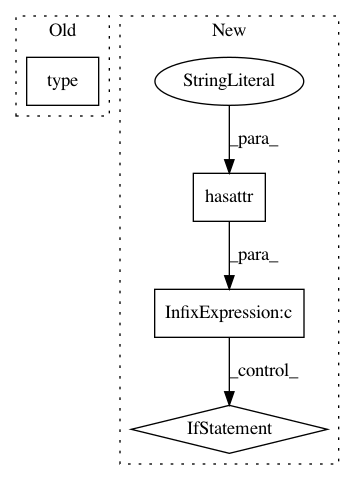

6edcb869c11b5b058a084106ec032fcaf31a239f,pycox/preprocessing/discretization.py,,make_cuts,#Any#Any#Any#Any#Any#,5
Before Change
def make_cuts(cuts, durations, events, min_=0., dtype="float64"):
if type(cuts) is tuple:
if cuts[0] == "equidistant":
cuts = cuts_equidistant(durations.max(), cuts[1], min_, dtype)
else:
After Change
def make_cuts(cuts, durations, events, min_=0., dtype="float64"):
if hasattr(cuts, "__iter__") and (type(cuts[0]) is str):
if cuts[0] == "equidistant":
cuts = cuts_equidistant(durations.max(), cuts[1], min_, dtype)
elif cuts[0] == "quantiles":
cuts = cuts_quantiles(durations, events, cuts[1], min_, dtype)
else:
raise RuntimeError("Need cuts to be e.g. ("equidistant", 100)")
In pattern: SUPERPATTERN
Frequency: 3
Non-data size: 4
Instances
Project Name: havakv/pycox
Commit Name: 6edcb869c11b5b058a084106ec032fcaf31a239f
Time: 2019-10-03
Author: haavard.kvamme@gmail..com
File Name: pycox/preprocessing/discretization.py
Class Name:
Method Name: make_cuts
Project Name: theislab/scanpy
Commit Name: b3505e7e9e08a389dfff5788db2b6634abdeb1cd
Time: 2019-06-05
Author: flying-sheep@web.de
File Name: scanpy/_settings.py
Class Name: ScanpyConfig
Method Name: logfile
Project Name: eth-cscs/reframe
Commit Name: a232b0996ee6043f4a1bcd51b48013680dfa7172
Time: 2018-04-29
Author: karakasis@cscs.ch
File Name: reframe/frontend/loader.py
Class Name: RegressionCheckLoader
Method Name: load_from_module